MangoLeaf AI
What is MangoLeaf AI?
Field-Ready Mango Health Diagnostic.
Built on a PWA foundation, MangoLeaf AI helps smallholder mango farmers classify photos of mango leaves and green fruits offline through an Android WebView app, with pre-treatment guidelines in English and Bisaya. Its companion website provides project information and Android installation guidance.
Support 7 classes
Anthracnose
Sooty Mold
Bacterial Canker
Mango Scab
Bacterial Black Spot
Healthy Leaf
Healthy Fruit
MangoLeaf AI Offline-First Tech Stack
Straightforward Walkthrough
Install MangoLeaf AI for Android
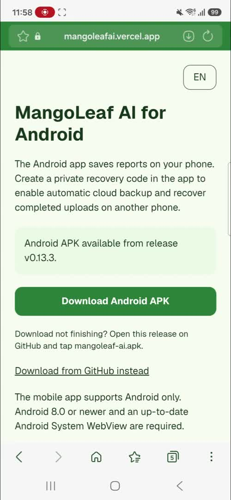
A clear view of mango health.
Open the Android app and tap Scan to begin.
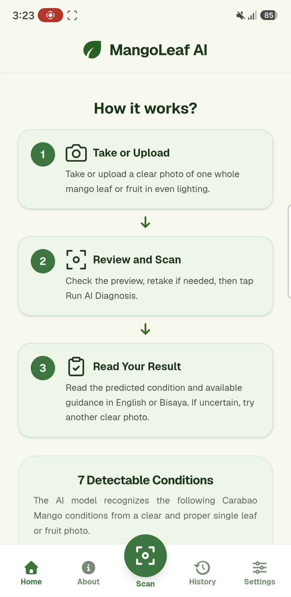
Choose a photo.
Read the photo tips, then tap Take Photo.
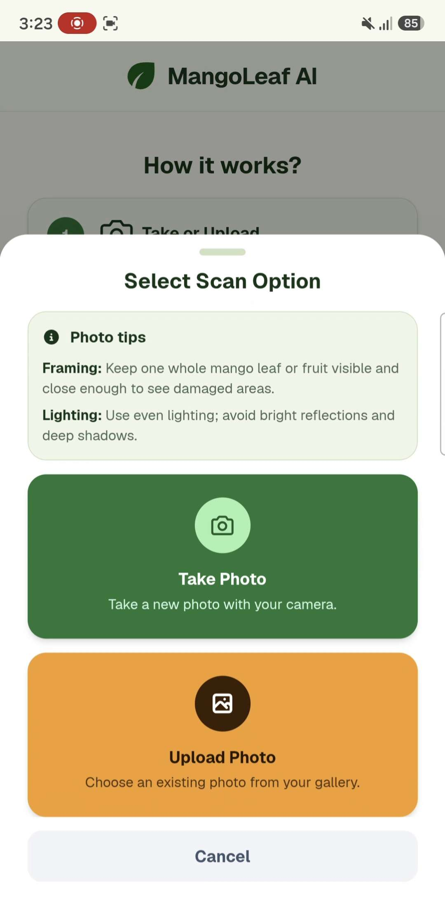
Frame the mango leaf.
Keep the whole subject visible in even light, then capture the photo.
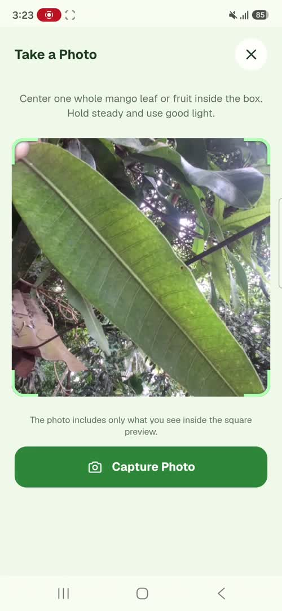
Check the photo before diagnosis.
Review your photo, then tap Run AI Diagnosis.
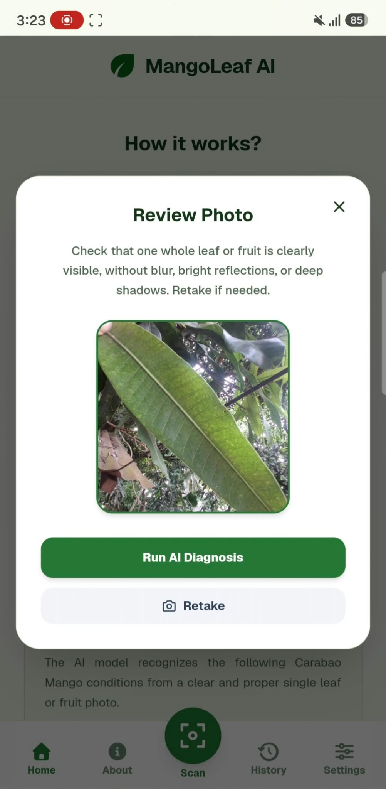
Your photo is being checked.
The on-device model checks the photo.
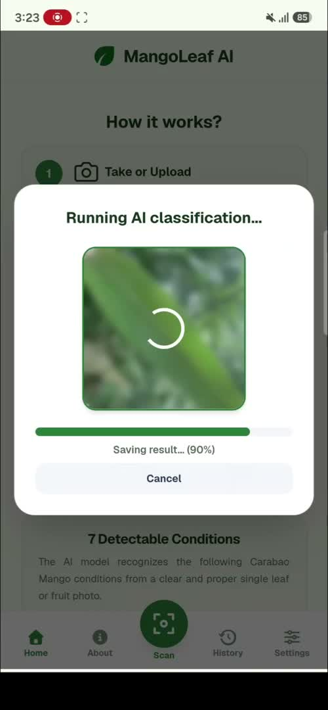
Understand the predicted condition.
Read treatment guidance in English or Bisaya.
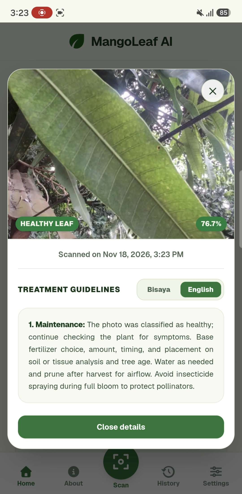
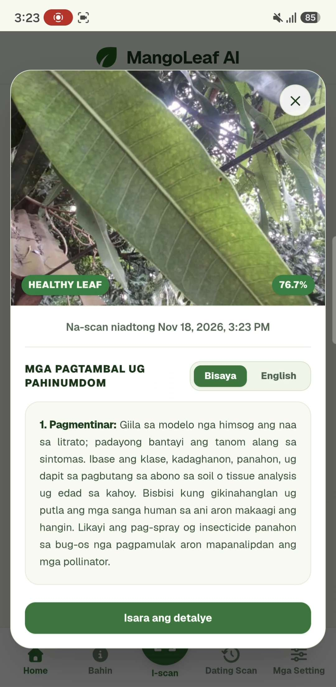
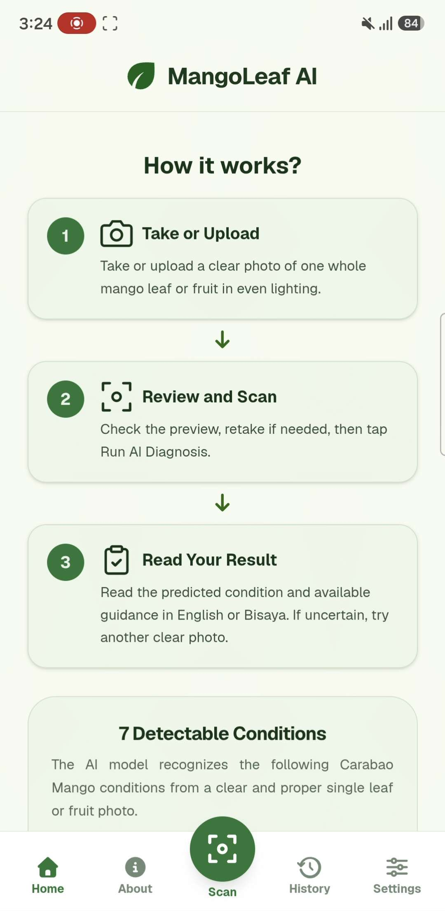
Return to a saved scan.
Open Scan History and select a saved result.
Open the photo and its result.
Review the saved scan and choose your language.
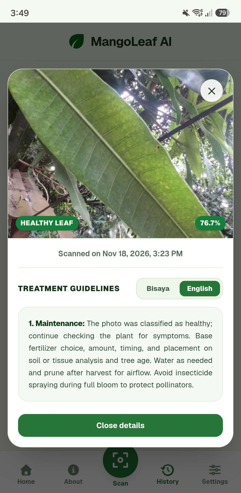
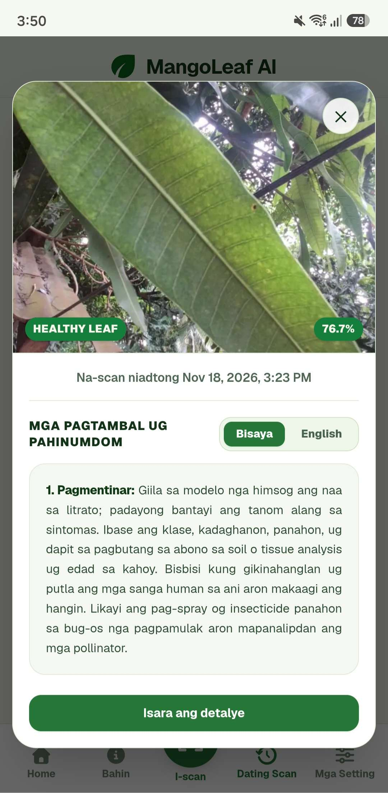
Back up and restore saved scans


MangoLeaf AI
Technology that works where the mango farmer works.